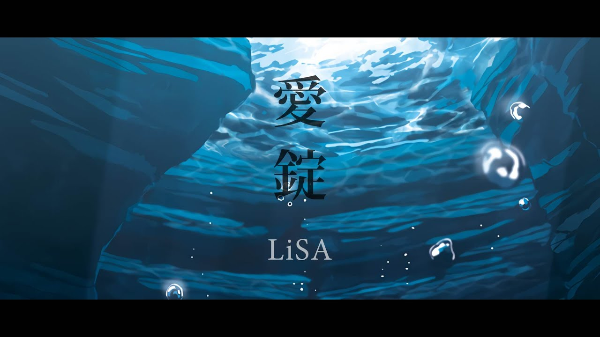

歌手:LiSA
簡介
- LiSA（日語：リサ，1987年6月24日－）是日本的女歌手，岐阜縣出身，曾為搖滾樂團「Love is Same All」的主唱。
個人的獨特魅力和搖滾曲風令她倍受矚目。演唱歌曲也被用作許多知名動畫的片頭曲和片尾曲，如《刀劍神域》、
《Fate/Zero》、《鬼滅之刃》、《鬼滅之刃劇場版 無限列車篇》、《Angel Beats》、《偽戀》、《我的英雄學院》、
《魔法科高中的劣等生》、《穿透幻影的太陽》。現時LiSA唱片公司為日本索尼音樂娛樂旗下的SACRA MUSIC公司。
被不少粉絲稱為「搖滾精靈」、「幽浮社御用歌姬」、「搖滾女神」等。
極高渲染力的演唱風格
- LiSA最愛的名言「今日もいい日だ」一般，希望能夠將最好的表演帶給觀眾，讓大家能夠擁有美好的一天，因此其演唱的
風格一直都是以情緒的感染力著稱，正如她在舞台上舉手投足間所散發的魅力，直接且具有擴散性的蔓延，帶動台下的粉
絲為其瘋狂，並沉浸在如此的氛圍當中。LiSA的嗓音高亢而不失溫潤，清亮且具有高度的穿透性，搭配上其獨樹一格的
感情詮釋，毫不保留且爆炸性的釋放情感，完全的融入歌曲之中，讓人不可自拔的沉醉在她所演繹的聽覺饗宴。其中尤以
「一番の宝物」著稱，懷抱著還能夠再見面的心情去傾訴自己的思念，LiSA投入的程度讓其多次在舞台上唱到落淚，正因
如此的融入自己的歌曲之中，搭上其樂團出身的舞台渲染力，才讓人更難以抗拒LiSA的魅力。
★相關歌曲推薦 |
|---|
| 1.再会 with Uru |
| 2.Unlasting |
| 3.シルシ |
| 4.愛錠 |
| 5.紅蓮華 |
6.炎 |